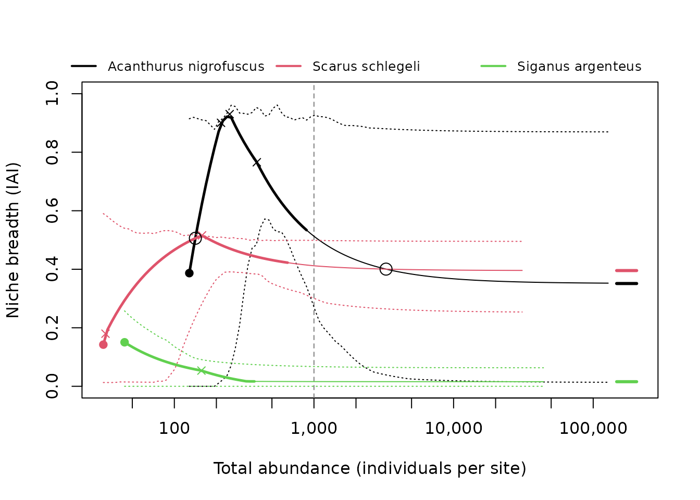
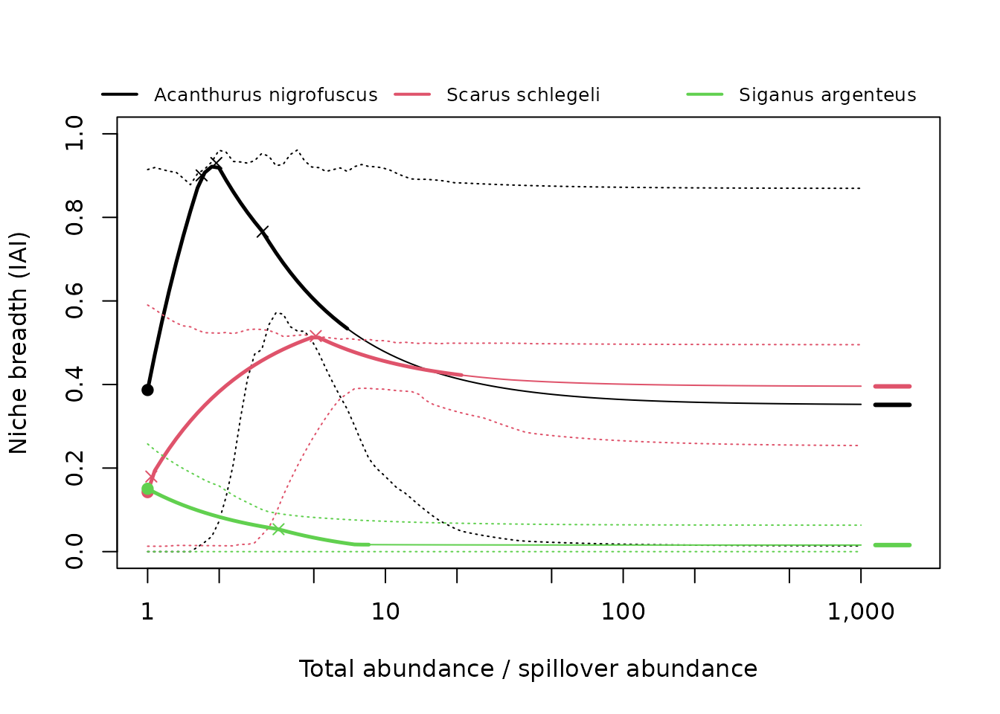

This vignette explains what isoniche computes. The method is described in full by Granot, Dubiner & Belmaker (2026).
Isodars
Under density-dependent habitat selection, individuals settle where their expected fitness is highest. As a habitat fills up, its quality declines, so later individuals settle in the next-best habitat (the ideal free distribution; Fretwell & Lucas 1969). The densities in two habitats at which fitness is equal form a line, the isodar (Morris 1987):
The intercept measures a density-independent preference: habitat 2 holds individuals before habitat 1 receives any. The slope measures how quickly habitat 2 fills compared with habitat 1 as total abundance rises. A species without habitat preference has and .
Isodars are estimated from replicates (sites, or surveys) in which the species’ densities in each habitat are known. Because both densities are measured with error, they are fitted by total least squares (major-axis regression), not by ordinary regression.
Why abundance-based indices are biased
Whenever an intercept is not zero, the share of individuals in each habitat changes with total abundance. A rare species keeps most individuals in its preferred habitat and looks like a specialist; the same species, when abundant, spills into other habitats and looks like a generalist. A classic index, such as 1 - Gini of the habitat proportions, therefore partly measures abundance:
set.seed(2)
sim <- simulate_isodars(slope1 = 1, slope2 = 1, int1 = 8, int2 = 8, noise = 1,
n = 60)
classic <- apply(as.matrix(sim[1:3]), 1, function(x) {
x <- sort(x)
n <- length(x)
g <- 2 * sum(seq_len(n) * x) / (n * sum(x)) - (n + 1) / n
(1 - g - 1 / n) * n / (n - 1)
})
plot(sim$total_abundance, classic, log = "x", pch = 19,
xlab = "Total abundance at the site",
ylab = "Classic niche breadth (1 - Gini)")All sites come from one species with fixed habitat preferences, yet niche breadth rises with abundance. Rarefaction (Cayuela et al. 2015) removes the effect of sample size on observed habitat use, but not this effect, which is part of how the species uses habitats.
Pairwise isodars and the n-dimensional isodar
With
habitats there are
pairwise isodars, fitted separately, each with every site at which both
habitats were sampled. The examples use three species of
moorea_fish, reef fish counts from Moorea (BioTIME 2.0;
Dornelas et al. 2025), as in the paper:
three <- c("Acanthurus nigrofuscus", "Scarus schlegeli", "Siganus argenteus")
fish3 <- moorea_fish[moorea_fish$species %in% three, ]
pw <- fit_isodars(fish3, species = "species", site = "site",
habitat = "habitat", abundance = "abundance")
pw$fit[[1]]
#> # A tibble: 3 × 7
#> habitat_x habitat_y intercept slope sd n_sites flipped
#> <chr> <chr> <dbl> <dbl> <dbl> <int> <lgl>
#> 1 barrier_reef fringing_reef 0.553 0.916 59.3 13 FALSE
#> 2 outer_slope barrier_reef 49.6 0.265 66.9 13 TRUE
#> 3 outer_slope fringing_reef 86.6 0.0755 70.9 13 TRUEThe n-dimensional isodar is a line through habitat space,
not a plane. Equal fitness in
habitats imposes
equalities, leaving one degree of freedom: as total abundance changes,
densities in all habitats move together along one line. Its direction
says how fast each habitat fills as abundance rises (the analogue of the
slopes), and where it enters each habitat reflects density-independent
preferences (the analogue of the intercepts). The line is the first
principal axis of the site x habitat densities;
var_explained is the share of variance it accounts for.
ln <- fit_isodars(fish3, species = "species", site = "site",
habitat = "habitat", abundance = "abundance", dim = "ndim")
ln$fit[[3]]
#> n-dimensional isodar (line), method: pca | sites: 13
#> Variance along the line: 0.996
#> # A tibble: 3 × 3
#> habitat mean direction
#> <chr> <dbl> <dbl>
#> 1 barrier_reef 1.08 0.0160
#> 2 fringing_reef 43 1.000
#> 3 outer_slope 4.54 -0.0162When some sites lack some habitats, the line is estimated with a
one-factor model that uses every site with at least two habitats
(ndim_method = "latent", fitted with
glmmTMB).
The isodar-adjusted inequality
The isodar-adjusted inequality (IAI) allocates a chosen
total abundance
among habitats as the isodars predict, and computes 1 - Gini of that
allocation, scaled to 0-1. For pairwise isodars the allocation solves
the isodar equations
by weighted least squares subject to
;
habitats predicted negative are set to 0 and the rest re-solved. By
default each isodar is weighted by its inverse variance,
(weights = "1/var"). For the line, the allocation is the
point where the line meets
.
Two values summarise the IAI:
- DI niche breadth, at the spillover abundance : the smallest total at which every used habitat holds at least one individual (per reference effort). It mainly reflects the intercepts.
- DD niche breadth, as , where only the slopes (the direction of the line) matter.
nb <- niche_breadth(fish3, species = "species", site = "site",
habitat = "habitat", abundance = "abundance",
n_boot = 199, seed = 1)
nb[c("species", "nb_di", "nb_di_lower", "nb_di_upper", "spillover_abundance",
"nb_dd", "nb_dd_lower", "nb_dd_upper")]
#> # A tibble: 3 × 8
#> species nb_di nb_di_lower nb_di_upper spillover_abundance nb_dd nb_dd_lower
#> <chr> <dbl> <dbl> <dbl> <dbl> <dbl> <dbl>
#> 1 Acanthur… 0.468 0.0390 0.510 133 0.365 0.0567
#> 2 Scarus s… 0.143 0.0470 0.664 30 0.399 0.198
#> 3 Siganus … 0.159 0.0479 0.651 42 0.0102 0
#> # ℹ 1 more variable: nb_dd_upper <dbl>
#> Abundances are per site (equal effort in every site and habitat).Intervals come from resampling whole sites with replacement and
refitting the isodars. The density-dependent value can also be computed
at a given total (dependent_at = 1000, as in the paper) or
at the largest observed site total
(dependent_at = "max_observed").
The niche breadth curve
Above , until a habitat is clipped to zero, the allocation is linear in . If, in addition, no two habitats swap rank anywhere above , so niche breadth is halfway between the two values at . Where the predicted abundances of two habitats cross, the curve changes course (it keeps the form , with new constants, between crossings); these preference reversals are reported, as are habitats used at low density and abandoned at high density:
nb$abandoned
#> [1] "" "outer_slope" "outer_slope"
nb$reversals[[1]]
#> total_abundance habitat_1 habitat_2 niche_breadth
#> 2 235.4562 barrier_reef outer_slope 0.9759597
#> 3 244.3702 fringing_reef outer_slope 0.9791916
#> 1 323.1334 fringing_reef barrier_reef 0.8452180
Plotting against abundance relative to puts all DI values at 1:
plot(curve, x_axis = "relative")
Indices from isodar parameters (Appendix S1)
pairwise_niche() summarises the pairwise isodars
directly. An isodar can be written with either habitat on the x-axis, so
the indices are built to give the same answer either way: slopes enter
as
,
because
,
and intercepts as the perpendicular distance of the isodar from the
origin,
.
The indices are the inverse root-mean-square deviations from no
preference,
for slopes and
for intercepts, and the weighted means of
and
.
The intercept index is in abundance units, so it depends on effort; the
slope index does not.
pn <- pairwise_niche(pw$fit[[1]], weights = "1/var")
pn
#> Niche breadth from pairwise isodars (log scale)
#> # A tibble: 1 × 7
#> mean_abs_log_slope mean_distance slope_niche_breadth intercept_niche_breadth
#> <dbl> <dbl> <dbl> <dbl>
#> 1 1.18 39.6 0.640 0.0188
#> # ℹ 3 more variables: n_isodars <int>, n_slope <int>, note <chr>
#> 1 cycle(s) of three habitats; 1 inconsistent (|log(product of slopes)| > 0.405); see $cyclesThe isodars of three habitats should agree with each other: going
round the cycle A to B to C and back to A, the slopes multiply to 1.
$cycles gives this product for every set of three habitats,
and flags it when it departs from 1 by more than a factor of
exp(cycle_tolerance) (default 1.5):
pn$cycles
#> # A tibble: 1 × 6
#> habitat_1 habitat_2 habitat_3 product log_product inconsistent
#> <chr> <chr> <chr> <dbl> <dbl> <lgl>
#> 1 barrier_reef fringing_reef outer_slope 3.21 1.17 TRUEThe earlier, orientation-dependent indices (mean intercept and slope,
deviations
and
)
are available with scale = "linear".
Simulating data
simulate_isodars() generates densities in any number of
habitats from known isodars, optionally with missing habitats, which is
useful for checking the method on a known answer:
set.seed(4)
sim <- simulate_isodars(2, 2, 0, 0, noise = 0.5, n = 60)
iai(fit_isodars(sim, hab_cols = c("hab1", "hab2", "hab3"), dim = "ndim"),
abundances = 100)
#> # A tibble: 1 × 6
#> total_abundance niche_breadth hab1 hab2 hab3 note
#> <dbl> <dbl> <dbl> <dbl> <dbl> <chr>
#> 1 100 0.571 14.3 28.6 57.1 ""The true value for these isodars is 0.571.
References
Cayuela, L., Gotelli, N. J. & Colwell, R. K. (2015). Ecological and biogeographic null hypotheses for comparing rarefaction curves. Ecological Monographs, 85, 437–455.
Dornelas, M., Antão, L. H., Bates, A. E. et al. (2025). BioTIME 2.0: expanding and improving a database of biodiversity time series. Global Ecology and Biogeography, 34(5), e70003. https://doi.org/10.1111/geb.70003
Fretwell, S. D. & Lucas, H. L. (1969). On territorial behavior and other factors influencing habitat distribution in birds. I. Theoretical development. Acta Biotheoretica, 19, 16–36.
Granot, I., Dubiner, S. & Belmaker, J. (2026). Why abundance-based indices of niche breadth are biased, and what can be done to improve them. Ecology Letters (in revision). Itai Granot and Shahar Dubiner contributed equally.
Morris, D. W. (1987). Spatial scale and the cost of density-dependent habitat selection. Evolutionary Ecology, 1, 379–388.